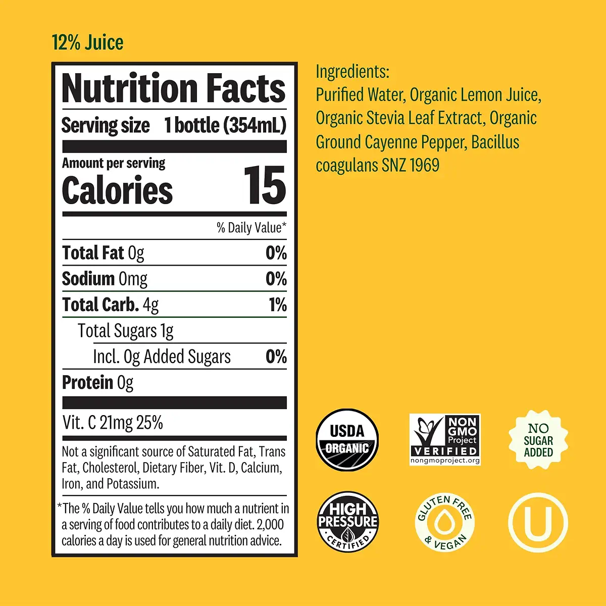

The presence of the organic sweetener stevia here is, for lack of a better word, notable, and so is the added bacteria. The list is alright, but your objective was to get something with no additives or other flavors.